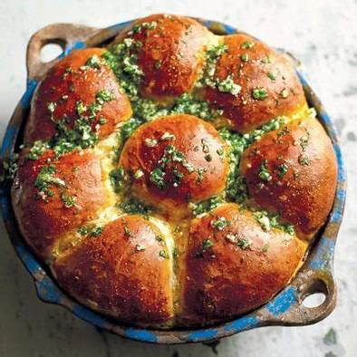

Pampushka  Restaurant
Welcome
Welcome ~ Вітаємо to Pampushka Restaurant where dining is just the beginning of your journey. Step into a total cultural experience where great food is just a bonus. At Pampushka we take Ukrainian cuisine to a new level.
The menu at Pampushka leaps beyond the old familiar basics such as borsch, cabbage rolls and pyrohy. Of course we serve all those traditional dishes you would expect to find on a Ukrainian menu. However, we also explore the more exotic dishes representing various regions of Ukraine. You will taste Ukrainian dishes you never dreamed existed. Our frequent travel to Ukraine brings authentic recipes from numerous fine restaurants in Ukraine from Kyiv to Lviv to Bukovyna to the Black Sea and more.
To complement your dining adventure we serve imported beers, wines, fine champagnes and several premium vodka choices from Ukraine. Sample such Ukrainian liquor labels as Slavutich, Lvivske, Krimsekt, Odessa, Slava, Zirkova, Khortytsya, and Nemiroff to name but a few.
At Pampushka you will certainly stimulate all your senses -- the Ukrainian way. When we say ‘taste’ we involve more than just your taste buds. Be prepared for sights, sounds, smells, tastes and feelings that are sure to transport you to another world and another time.
A visit to Pampushka begins before you even cross the threshold. You will immediately be taken on a journey to a Ukrainian village as you approach what appears from the exterior to be a Ukrainian house with its thatched roof and woven willow fence. As you enter you may choose your own adventure by dining in the setting of the courtyard of an 18th century village house or alongside a mural that takes you into a village market place bazar. Feeling romantic? Take a table under the romantic starlight of the orchard. Or surround yourself by original art from Ukraine that will inspire any appetite.
Plenty to see—plenty to taste. The journey to Ukraine begins at Pampushka. Whether it’s a quiet dinner or a party of celebration we will be happy to serve you and we hope to have that opportunity soon. Bring your appetite and your celebration to us.
We await your arrival! Ми вас радо чекаємо!